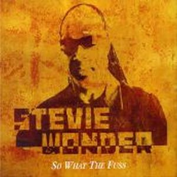
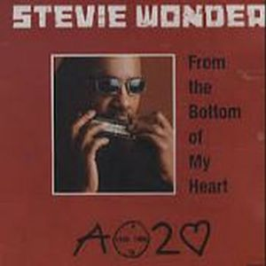

Diez años han pasado para que Stevie Wonder nos ofrezca un nuevo trabajo completo, A Time To Love. Quizás el tiempo transcurrido no satisfaga un trabajo sobresaliente, pero desde luego sí notable. Stevie es mucho Stevie y su vuelta ha traido un soplo de aire fresco a un panorama musical de R&B carente de creatividad, con letras poco cuidadas y sonidos repetitivos.
Es un trabajo donde mezcla con maestría sonidos actuales con su mejor época de los setenta, con letras trabajadas y comprometidas con la realidad social y el amor, mirando con optimismo el futuro. Son 15 temas de los cuales la mayoría son buenos, algunos a medio tiempo excelentes, como la jazzy "Moon blue", "True love", "Passionate Raindrops" o "How Will I Know". Canciones Funkys como "Tell Your Heart I Love You" o "Please Don't Hurt My Baby", que podrían pertenecer a sus discos de hace 30 años por el tratamiento rítmico y sonido de los teclados, como fue en su dia un gran innovador.
Para este disco, Stevie Wonder ha contado con colaboraciones como Kim Burrell en la gospel "If You Love Cannot Be Moved", aportaciones de Prince y En Vogue en el single "So What The Fuss", India Arie y Paul McCartney tocando las guitarras en "A Time To Love", sin olvidarnos a Bonnie Raitt, Kirk Franklin y su hija Aisha Morris que ya colaboró cuando era pequeña en "Isn't she lovely". Es en definitiva una vuelta positiva de este genio de la música que como dice él:
"hay un tiempo para la guerra, un tiempo para hacer daño y tiempo para el colapso. Ahora más que nunca necesitamos tiempo para amar". Lo que esperamos es que sus nuevos trabajos no se demoren en el tiempo y su futuros proyectos, Gospel Inspired by LuLa, Through The Eyes Of Wonder o Ten Billon Heart se editen lo antes posible y nos ofrezca su faceta más creativa y emocional.

